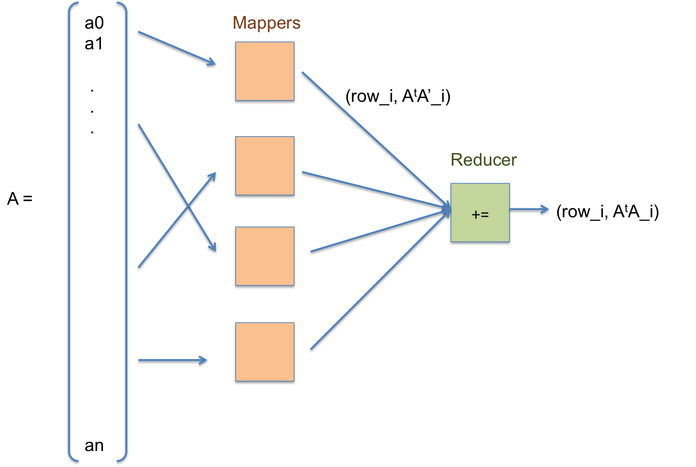

Berkeley Benchmarking and Optimization Group
The BeBOP group is associated with the Berkeley ParLab. My advisor is Professor James Demmel.
I am currently working on Tall and Skinny QR (TSQR) factorizations in MapReduce frameworks. My CS 267 (Applications of Parallel Computing) project investigated TSQR using Hadoop on Magellan, a cloud testbed at NERSC. Currently, I am working on data serialization methods to speed up the Hadoop job times. I collaborate with Professor David Gleich.
|  |
Gamma-ray Imaging Framework

|
The GRIF project is part of the Berkeley Applied Research on the Imaging of Neutrons and Gamma-rays (Bearing) group, which is a subset of the Domestic Nuclear Threat Security Initiative (Donuts). My advisors are Dr. Dan Chivers and Dr. Mark Bandstra. The Bearing group is an interdisciplinary effort by students and researchers in nuclear engineering, (astro)physics, mathematics, electrical engineering, and computer science that works on problems in nuclear detection.
I am developing a parallel, multi-platform software framework for gamma-ray imaging that is used for nuclear detection. The project is designed to be flexible enough for researchers outside of our group to adopt as a common model for detector software support. I have worked on data analysis, backend architecture, and code generation techniques for the project. The code generation allows end-users to tweak system parameters during run-time. The picture below shows 15 channel reads that are updated in near-real-time in parallel.
UC-Berkeley Department of Industrial Engineering and Operations Research
For the IEOR department, my advisors were Professor Dorit Hochbaum and Dr. Barak Fishbain.
I performed research on algorithmic methods for computational biology. Specifically, I looked at MRI sequences provided by the OsteoArthritis Initiative (OAI). The OAI has an open database of knee scans along with accompanying data about the patients. The patients were followed over a 48-month period, and data is available over different visits over the time interval. This turns into a large data mining project for a community of researchers in engineering, computer science, and medicine. Below are two examples of how the images can be cut (using the pseudoflow maximum flow algorithm) to look at the cartilage or bone segment of the image.
|
|